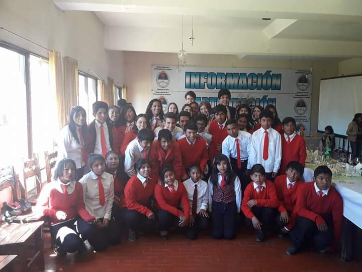
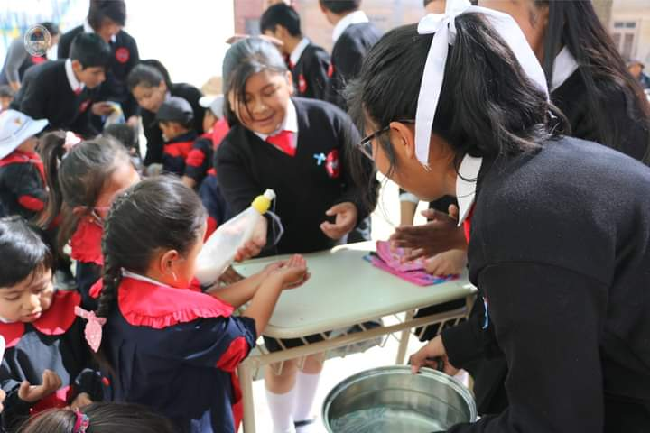
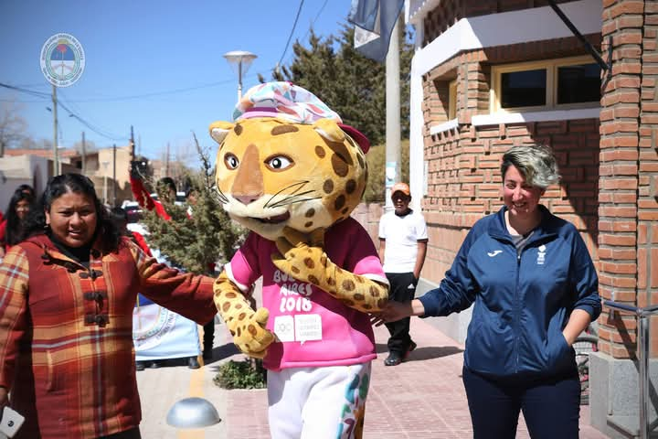
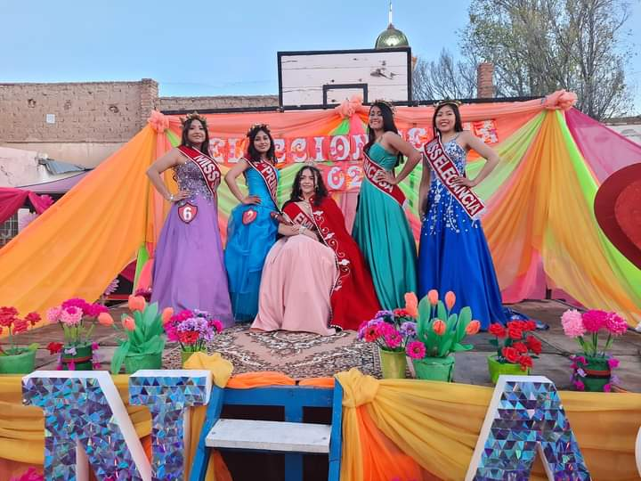
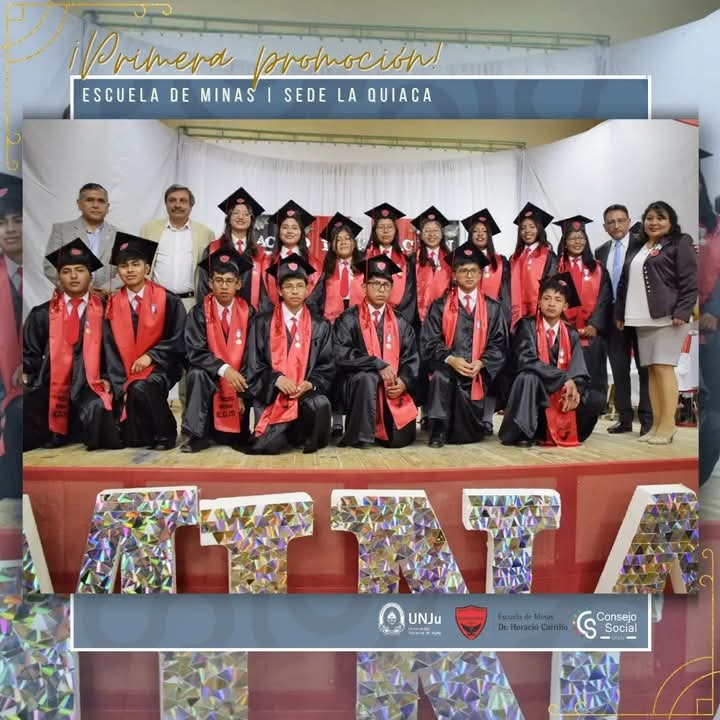
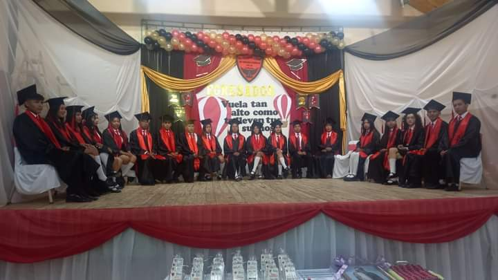
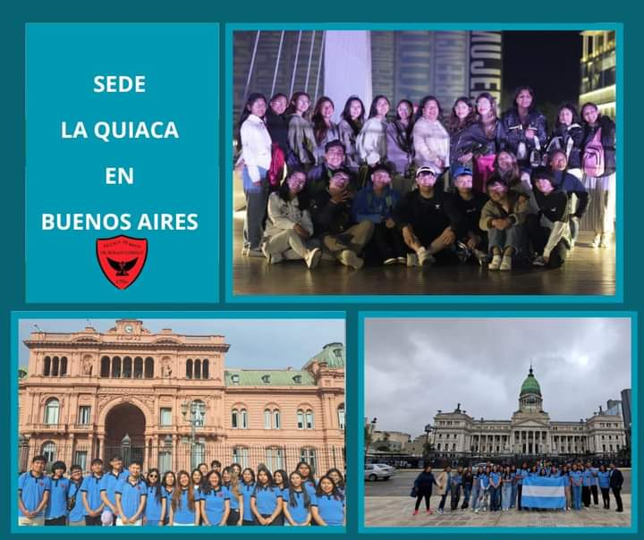

Historia de la Escuela de Minas
Introduccion:
En esta sección, realizaremos un recorrido por la evolución histórica de la Escuela de Minas, sede La Quiaca, desde su fundación hasta el presente.
Fundacion:
La fundación de la Escuela de Minas, sede La Quiaca, se inició durante la gestión del intendente Dante Velázquez. Sin embargo, fue durante el mandato de Miguel Ángel Tito que se lograron avances significativos en el proyecto, gracias a la colaboración de figuras como los profesores Silvia Carreta y Carlos Villán, el rector Rodolfo Tequi y la directora Graciela Medarni. Finalmente, la escuela fue inaugurada el 10 de abril de 2017, en la calle 25 de Mayo esquina Árabe Siria. A pesar de contar con 160 alumnos preinscriptos, solo 35 iniciaron sus estudios en ese año.
En el año 2017, la Escuela de Minas, sede La Quiaca, abría sus puertas a un grupo de 35 estudiantes pioneros:
• Estudiantes: Alberto Alan, Albornoz Emilce, Apaza Nelson, Auncapiña Matías, Bautista Adelma, Burgos Roque, Chana José, Choque Nilda, Coria Ariel, Coria Fernando, Erazo Álvaro, Farfán Iván, Fernández Baltazar, Fernández Erika, Fernández Fernanda, Flores Arnaldo, Gemetro Erika, Gregorio Ana, Guevara Aín, Guiterrez Melina, Gutiérrez Luis, Martínez Federico, Martínez Yanina, Puca Oscar, Ramos Belen, Ramos José, Ramos Shashiquen, Solano Wilfredo, Tastaca Anabel, Tito Rocío, Valdiviezo Giselle, Valdiviezo Maximiliano, Valero Fabio, Vargas Roberto, Vilte Joel y Vilte Leonel.
Al frente de este nuevo proyecto educativo se encontraba la profesora Julieta Urzagaste, quien asumió la dirección de la escuela desde su fundación hasta la actualidad. Junto a ella, un equipo docente altamente capacitado, conformado por:
• Docentes: Profesor Arias Víctor R., Ingeniero Bitancor Miguel A., Profesora Carrazana Ana, Profesor Chocobar Mario P., Profesora Flores Silvia G., Profesora Lamas Cecilia A., Profesor Luna Ariel, Licenciada Quispe Natalia I., Ingeniero Ramos Jacinto T., Profesor Rodríguez Héctor R., Profesor Sotar Walter R., Profesora Toconas V. Laura M., Profesor Uro Gustavo A., Profesora Vázquez Natalia L. y Profesor Velázquez Gustavo A.
El personal no docente también desempeñó un papel fundamental:
• Personal administrativo: Secretario Cabrera Cayo Ernesto, Profesor Mamani Ismael, Profesora López Silvia.
• Personal de servicio: Señora Aroas Ana, Señora Sosa Ofelia, Señora Vilca Ramona.
En sus inicios, la escuela contaba con una infraestructura básica que incluía tres aulas, una dirección, una secretaría, una galería, baños separados para hombres y mujeres, un patio y un pasillo que conectaba los espacios. A pesar de ser un comienzo modesto, estas instalaciones sirvieron como el primer hogar de la comunidad educativa de La Quiaca.
Eventos:
2017: Inauguración y primeros pasos
• Abril 10: Inauguración oficial de la Escuela de Minas, sede La Quiaca.

• Mayo 11: Equipamiento de las aulas taller con herramientas donadas por el intendente.
• Julio 5: Participación de alumnos de 1er año en los Juegos Nacionales Evita (instancia local).
• Agosto 2: Campaña de higiene en el jardín Rayitos con jabones elaborados por los alumnos.
• Noviembre 27: Participación en el evento cultural Danzarte.
• Diciembre 7: Acto de clausara y entrega de placas con los nombres de los primeros alumnos: .
2018: Consolidación y crecimiento
• Marzo 28: Participación en el bautismo de la sede central.
• Abril 10: Primer aniversario de la escuela.
• Mayo 12: Participación en el campeonato de voleibol, fútbol y básquetbol.
• Junio 6: Concurso "Valoremos los Símbolos Patrios usando las Matemáticas".
• Agosto 24: Recibimiento de la llama olímpica de los Juegos Olímpicos de la Juventud.
• Octubre 24: Participación de Tatiana Shashiquen en los Juegos Evita (atletismo).
• Noviembre 14: Inauguración del taller de soldadura.
• Diciembre 8:
o XII Olimpiadas Provinciales de Dibujo Técnico: Emilce Grisel Albornoz obtiene el segundo lugar.
o Proyecto interdisciplinario "Integrando conciencias en Yavi"
2019: Expansión y nuevos desafíos
• Abril 10: Segundo aniversario de la escuela.
• Mayo 24: Baile de bautismo para los ingresantes de 1er año en el salón Greco.
• Agosto 26: Participación en actividades solidarias en la localidad de Casti.
• Septiembre 2: Presentación de la primera embajadora estudiantil, Belén Alvarado Quiroga.
• Septiembre 5: Clasificación de Camila Barcaya para la instancia Nacional de los Juegos Evita Sub 14.
• Septiembre 10: Campaña de concientización sobre la prevención del suicidio.
• Noviembre 5: Victoria del equipo de básquet femenino sub 16 en los juegos escolares de La Quiaca.
2020: Adaptación y resiliencia frente a la pandemia
• Abril 10: Tercer aniversario de la escuela.
• Junio 4: Visita del gobernador Gerardo Morales a la sede de La Quiaca.
• Junio 5: Proyecto "Conciencia ambiental" realizado por estudiantes de 2do año.
• Julio 14: Entrega de mascarillas de protección facial a la comunidad.
• Diciembre 16: Alumnas obtienen el 2do premio en el 1er Foro virtual EsConEsi.
2021: Consolidación y crecimiento académico
• Abril 9: Cuarto aniversario de la sede, celebrado de forma virtual.
• Junio 8: Actividades por el Día Mundial del Medio Ambiente.
• Junio 24: Presentación del libro "Manuel Eduardo Arias. Vidas paralelas".
• Septiembre 8: Elección de la segunda embajadora estudiantil.
• Octubre 6: Presentación de proyectos de podcast sobre ESI.
• Octubre 15: Inauguración del gabinete/laboratorio de informática.
• Octubre 21: Alumna Ariana Micaela Silvestre obtiene un destacado resultado en la Olimpiada Argentina de Química.
• Diciembre 6: Acto de colación del ciclo lectivo 2021.
2022: Fortalecimiento de la identidad institucional
• Abril 10: Quinto aniversario de la escuela.
• Mayo 6: Bautismo de los nuevos alumnos de primer año.
• Mayo 30: Encuentro competitivo de natación entre alumnas del ciclo superior.
• Junio 30: Primer viaje de estudios a Buenos Aires de la primera promoción.
• Julio 29: Participación de la docente Ivone Quispe en la película "Pipa".
• Agosto 12: Elección de Yuliana Gonzales como embajadora estudiantil.
• Septiembre 1: Participación en los actos formales y desfile cívico militar.
• Septiembre 8: Entrega de notebooks del programa Conectar Igualdad.
• Septiembre 27: Obtención del primer lugar en la categoría de carroza no técnica.
• Octubre 25: Participación de Liliana Toconas en los Juegos Evita.
• Noviembre 12: Obtención del segundo premio en la 14ª Olimpiada de Dibujo Técnico.
• Diciembre 7: Egreso de la primera promoción de la escuela.
2023: Consolidación y proyección al futuro
• Abril 6: "Bomba de la Promo" para la segunda promoción.
• Abril 10: Sexto aniversario de la sede La Quiaca.
• Mayo 13: Bautismo de los alumnos ingresantes del primer año ciclo básico.
• Mayo 31: Segundo campeonato de natación.
• Agosto 17: Visita al hogar de ancianos "NTRA.SRA. DE LA MERCED".
• Agosto 20: Elección de embajadores estudiantiles.
• Agosto 25: Segundo viaje de estudios a Buenos Aires de la segunda promoción.
• Septiembre 8: Elección de embajadores estudiantiles para la ciudad de La Quiaca y el departamento Yavi. Ganadora la Escuela de Minas
• Octubre 3: Obtención del primer lugar en la categoría de carroza no técnica.
• Noviembre 7: Entrega de netbooks del programa Conectar Igualdad.
• Noviembre 11: Campeonato de básquet de los juegos escolares. Ganadora la Escuela de Minas
• Diciembre 9: Acto de colación y egreso de la segunda promoción.
2024: Expansión y nuevos desafíos
• Marzo 19: "Bomba de la Promo" para la tercera promoción.
• Abril 2: Participación de estudiantes en un programa de radio.
• Abril 11: Séptimo aniversario de la escuela.
• Mayo 23: Bautismo de los alumnos ingresantes del primer año ciclo básico.
• Agosto 16: Elección de embajadores estudiantiles.
• Octubre 1: Obtención del segundo lugar en el desfile de carrozas.
• Octubre 12: Mayra Cala obtiene el segundo puesto en "Embajadora Estudiantil Quebrada y Puna".
• Octubre 23: Tercer viaje de estudios a Buenos Aires de la tercera promoción.
Evolucion:
Desde su inauguración en 2017, la Escuela de Minas, sede La Quiaca, ha experimentado un crecimiento notable y constante. La institución ha logrado diversos avances, entre los que se destacan:
• Ampliación de la oferta educativa: La consolidación de la tecnicatura en informática ha brindado a los estudiantes una formación integral en el campo de la tecnología.
• Mejoramiento de las instalaciones: La escuela ha sido equipada con una heladera, televisores y computadoras, lo que ha mejorado las condiciones de estudio y trabajo. Además, se han iniciado obras para construir nuevas aulas, ampliando así su capacidad.
• Equipamiento especializado: Gracias a donaciones, el taller de soldadura ha sido equipado con herramientas especializadas, lo que ha permitido mejorar la calidad de la formación técnica.
• Acceso a tecnología: La participación en programas como "Conectar Igualdad" ha proporcionado a los estudiantes notebooks, facilitando su aprendizaje y conectándolos con el mundo digital.
Estos logros son el resultado de un trabajo conjunto entre la comunidad educativa, las autoridades locales y el gobierno provincial, y demuestran el compromiso de la escuela con la calidad educativa y el desarrollo de sus estudiantes.
Actualidad:
Autoridad actual
La Escuela de Minas, sede La Quiaca, cuenta con un equipo comprometido de profesionales que trabajan en conjunto para brindar una educación de calidad a sus estudiantes.
Dirección
• Directora: Julieta Urzagaste
Cuerpo Docente El cuerpo docente está conformado por un grupo de profesionales altamente calificados en diversas áreas, encargados de transmitir sus conocimientos y habilidades a los estudiantes.
Entre ellos se encuentran:• Entre ellos se encuentran: Álvarez, Angela Eugenia, Apaza, Miriam Margarita, Benítez, Zulema, Bitancor, Miguel Ángel, Calisaya, Rolando David, Carlos, Francisco, Carrazana, Ana, Chocobar, Petronio Mario, Corso, Manuel Aldo, Fernández, Noemí del Carmen, Flores, Silvia Griselda, Galvez, Oscar Ariel, Martínez, Carlos Fabricio, Quispe, Ivone Natalia, Ramos, Jcinto Tomás, Rodríguez, Héctor Rafael, Saavedra, Selva Yamila, Solís, Rubén Gustavo, Sotar, Rubén Walter, Uro, Gustavo Rodolfo, Vázquez, Natalia Lorena.
Personal Administrativo y de Servicios Además del equipo docente, la escuela cuenta con un equipo administrativo y de servicios que se encargan de diversas tareas, como la gestión académica, la atención al estudiante y el mantenimiento de las instalaciones. Entre ellos se encuentran:
• Preceptores: Cabrera, Cayo; López, Silvia; Martínez, Atilio; Sosa, Ofelia
• Personal No Docente: Mamani, Lucinda; Vilca, Ramona Guillermina
• Personal Contratado: Colque, Soledad; Chirri, Daniela; Rodríguez, Solange